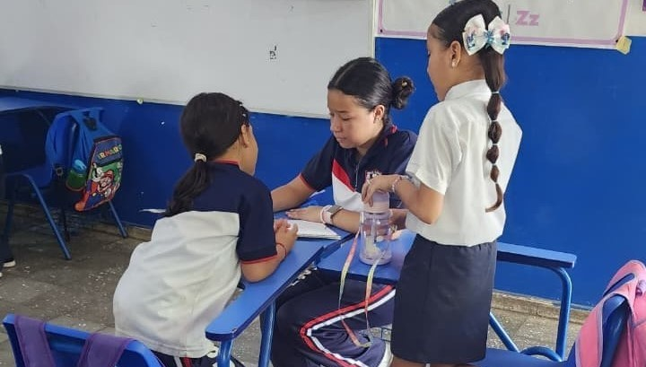
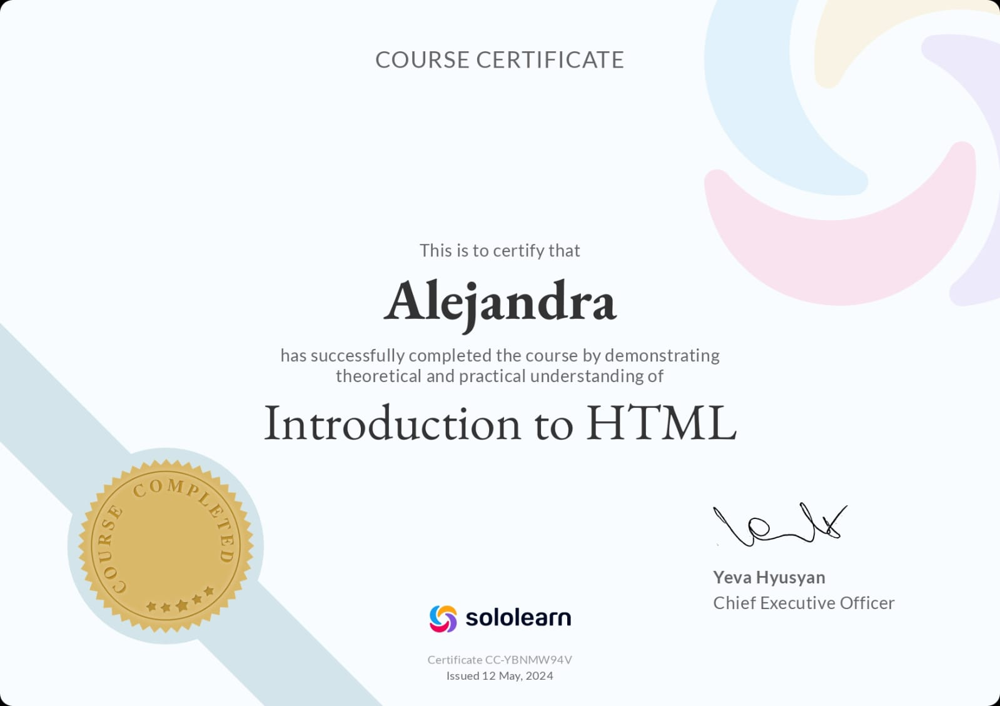
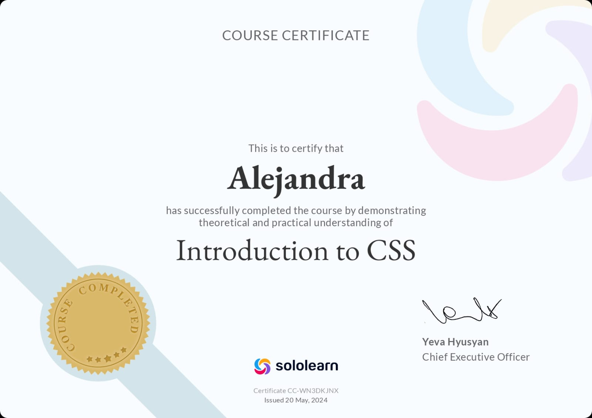
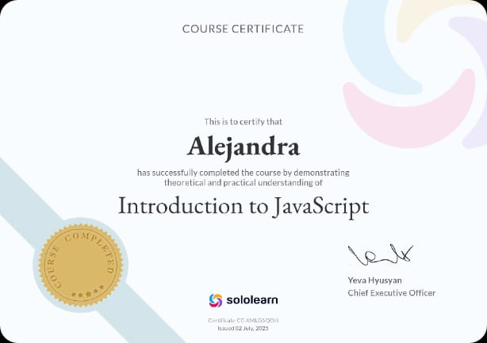
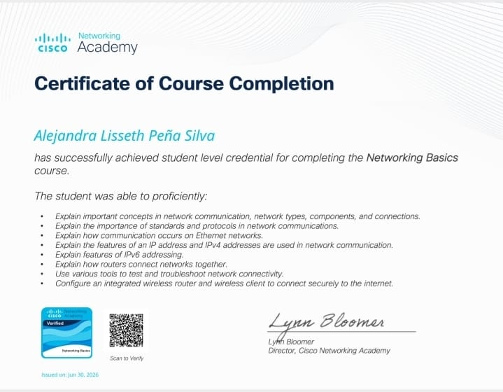
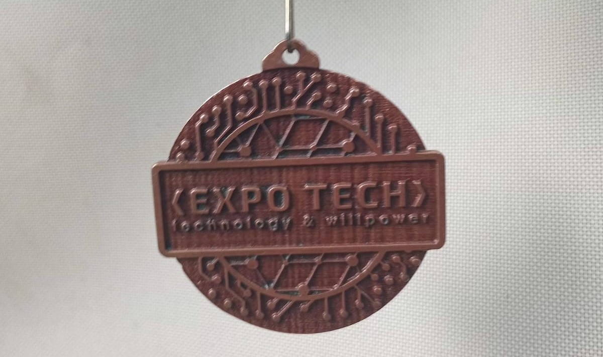
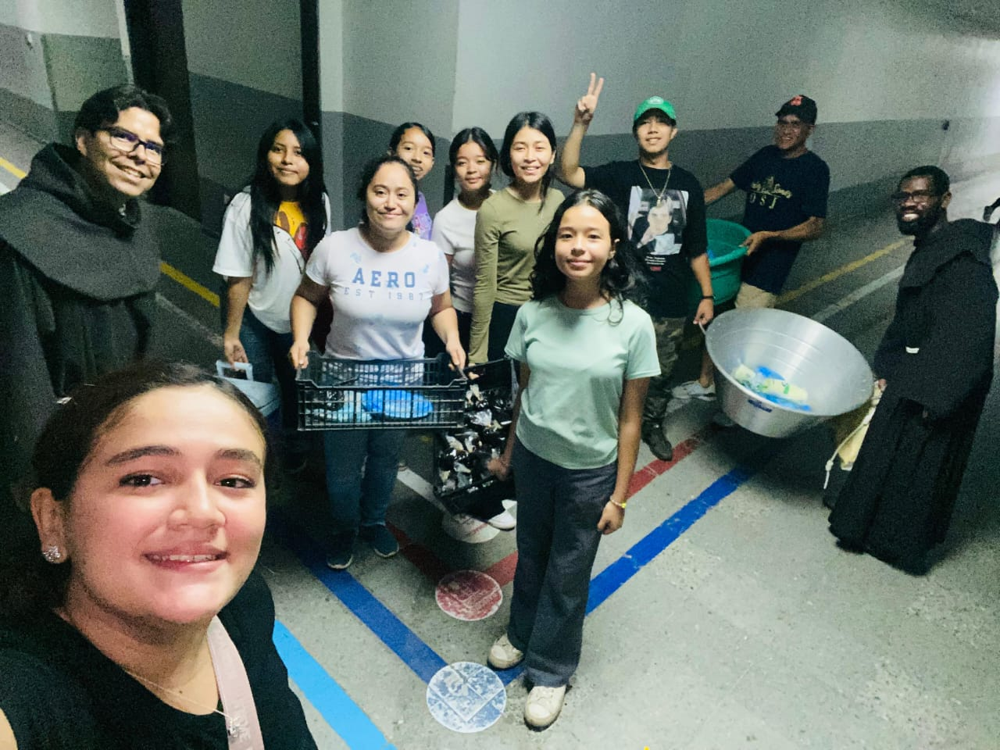
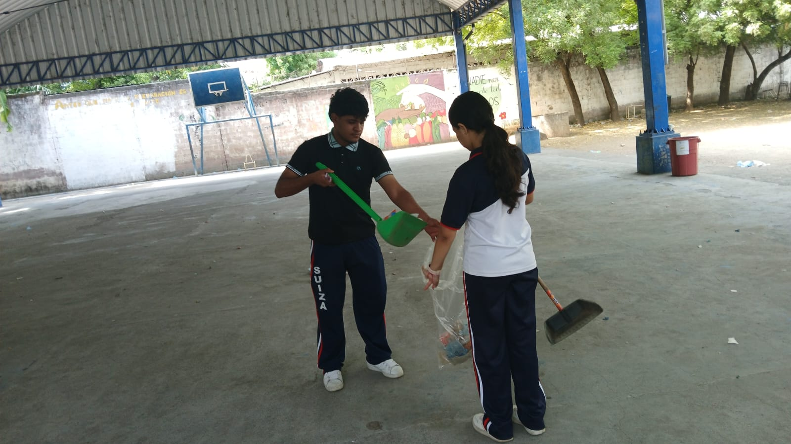
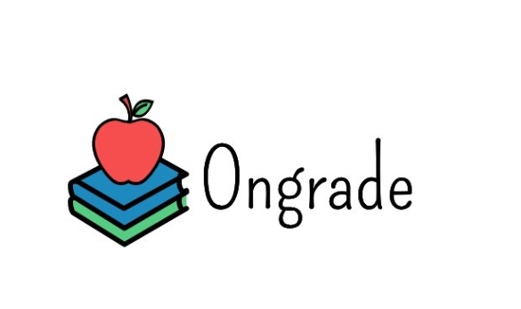
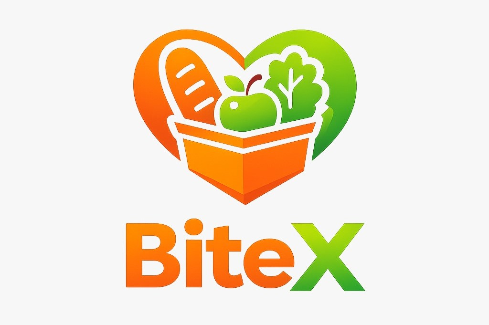

Cuidado de Niños
Ayuda con alfabetización como proyecto de horas sociales.
Estudiante de Bachillerato & Aspirante a Cirujana
¡Hola! Soy una joven que siempre está buscando aprender algo nuevo. Actualmente estudio segundo año de bachillerato. Desde pequeña he tenido muy claro que quiero estudiar Medicina, y mi mayor sueño es especializarme en Cirugía General. Me apasiona la idea de ayudar a las personas. Además, disfruto de las pequeñas cosas que me hacen feliz, como escuchar música, dibujar, pintar y ver series.

Mi nombre es Alejandra. Me considero una persona soñadora, responsable y perseverante. Me gusta pasar tiempo con las personas que quiero, escuchar música, ver series, hacer flores de origami y aprender cosas nuevas. A lo largo de mi vida he pasado por momentos difíciles, especialmente cuando tengo muchas responsabilidades y siento que estoy bajo presión. Sin embargo, esas experiencias me han ayudado a ser más fuerte, a conocerme mejor y a seguir adelante aunque las cosas se pongan difíciles.
Uno de mis mayores sueños es estudiar Medicina y algún día convertirme en cirujana. Me gusta ayudar a los demás y quiero trabajar mucho para alcanzar mis metas. También me siento orgullosa de los logros que he obtenido en mis estudios y de todo lo que he aprendido durante estos años. Sé que todavía me falta mucho por aprender, pero quiero seguir creciendo como persona, cumplir mis sueños y disfrutar cada etapa de mi vida.
Programa Empresarial Supérate Grupo Q
2024-2026
Complejo Educativo Confederación Suiza
2025-2026
Complejo Educativo Confederación Suiza
2016-2024
Complejo Educativo Confederación Suiza
2014-2015






Ayuda con alfabetización como proyecto de horas sociales.

Ayuda comunitaria, servicio en misa y otras actividades.

Campaña de limpieza en la escuela.

Aplicación escolar para gestionar, consultar y descargar calificaciones del sistema público en tiempo real.

Es una plataforma web interactiva diseñada para ofrecer guías paso a paso y protocolos de respuesta rápida ante emergencias.

Es un sitio web interactivo que conecta a grandes locales para donar la comida que les sobra a quienes más lo necesitan.
Resumen de mi trayectoria académica, competencias técnicas y metas profesionales.
Estudiante de Bachillerato General | Programa Supérate
Formarme profesionalmente en la carrera de Medicina con especialización en Cirugía General, combinando la vocación de servicio con habilidades científicas, de programación y resolución de problemas.